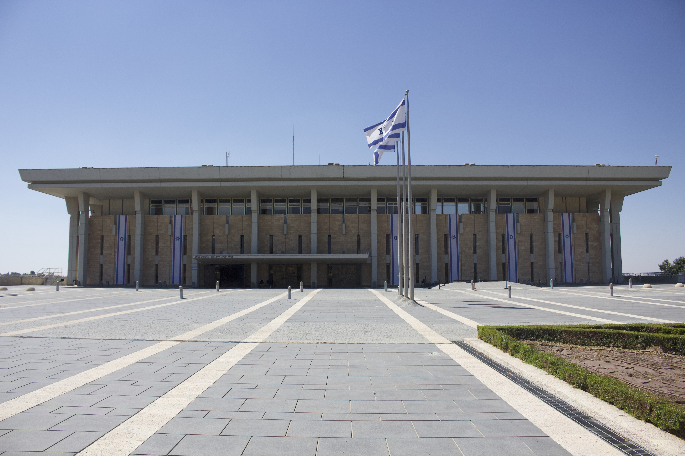

The Slaughterhouse

A picture of the front side of the Israeli Knesset.
You may have heard that the Israeli Parliament has passed a bill recently mandating the death penalty for Palestinian prisoners exclusively. It's crucial to understand what that means and the exact severity of the problem at hand right now, as this is not simply a debate about capital punishment but a race-based justice system. (Source )
On the surface, the legislation mandates the death penalty specifically by hanging for those convicted of fatal terror attacks against Israeli citizens. However, because of the jurisdictional divide between sovereign Israeli territory and the occupied Palestinian territories, the law applies exclusively to Palestinians.
What this means is that Jewish Israeli citizens residing in settlements in the West Bank are subject to Israeli civil law. Palestinians living alongside them are subject to Israeli military law. By introducing capital punishment into a military court system that already shows a conviction rate of over 99% for Palestinians, the state is creating a legal fast way for executions based entirely on the ethnicity and national origin of the accused.
So under this new bill, if an Israeli settler and a Palestinian resident commit the exact same crime: The Israeli will face a civilian court with due process, rights to legal counsel, and an exemption from the death penalty. The Palestinian will face a military tribunal, often relying on confessions obtained through severe interrogation, torture, and sheer force with the ultimate punishment of death.
This is not a mistake, but an explicit feature of the legislation, which means the state is knowingly institutionalizing a deadly form of systemic inequality.
And if you thought that was as bad as it could get, you are terribly mistaken, as I haven't even talked about where and how these prisoners are being kept. Many are being thrown into undisclosed "military detention camps" which human rights organizations and whistleblowers have repeatedly exposed for widespread torture, starvation, medical neglect, and severe abuse.
They've been intentionally secretive about these facilities, but leaked testimonies and satellite imagery have revealed horrific conditions that are being deliberately hidden from the public eye. These camps are essentially killing zones where prisoners are subjected to inhumane treatment and denied basic rights.
The Israeli government has a long, documented history of passing racially discriminatory laws. This systemic racism has been intentionally built into the state's legal framework for decades and it has been gradually seeping into the general public and normalizing violent extremism. Israel has become the first state apparatus to codify explicit race-based executions since Nazi Germany.
Now, we're finally seeing this facade unveil. It reflects a dark long-term ideological goal that the hardline Zionist establishment has been pushing towards for years: the complete systemic erasure of Palestinian rights and lives.
We need to be together and hand-in-hand to fight this. The most powerful tool we have right now is advocacy. We need to explicitly condemn this at every level. Educate the people around you, share the raw facts, and actively support Palestinian rights organizations that are fighting this on the ground. Silence is exactly what allows these laws to pass in the dark. We have to keep speaking up, loudly and consistently, to ensure this racist system doesn't go unnoticed by the rest of the world.